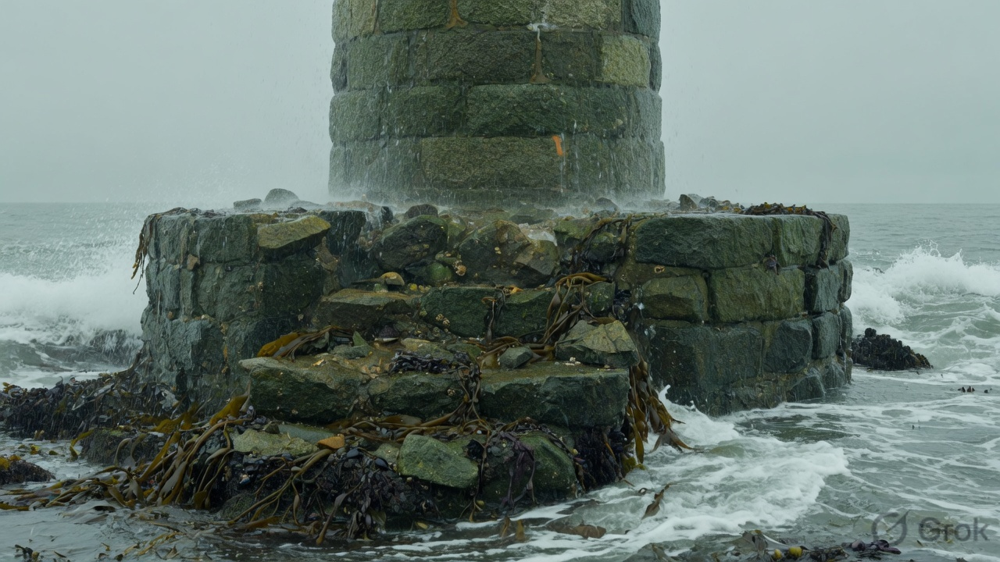
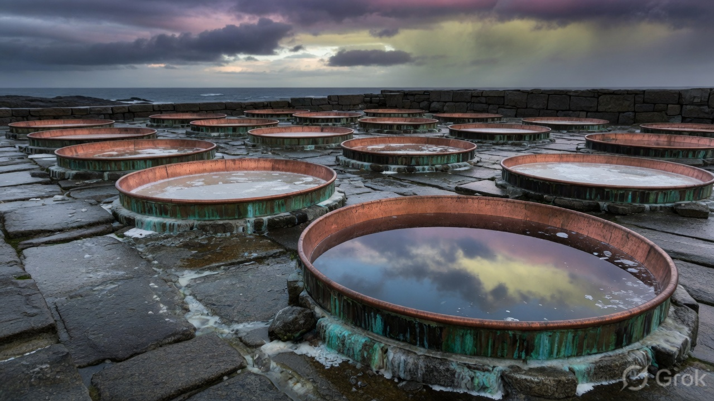
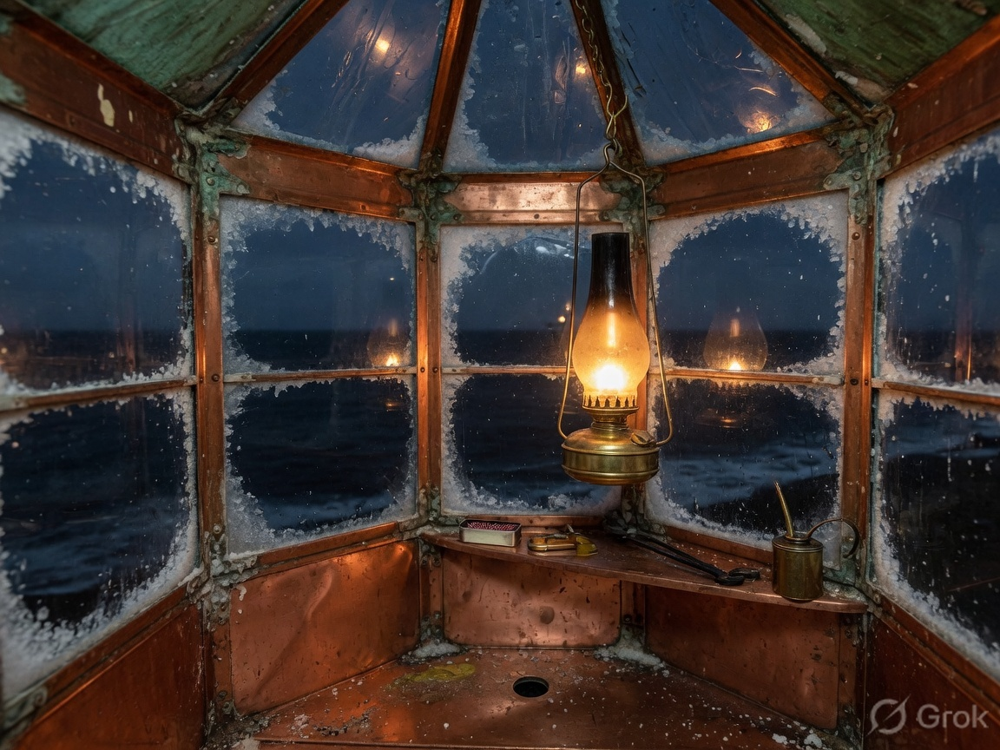

00 Reidy
Ready
Survey marks on wet stone. The plane sits at the tide line. Scaffolding already stands.
FRAME / 028 · SKERRY HOLM
“The viewpoint never leaves the skerry. Stone, timber and copper rise from the tide line until the lantern holds.”
0%
Space play · R rebuild · T time · W weather · C centre
01 — The tide line
A plane faces the sea and travels up the keep. Below it, work is finished. Above it, only scaffolding — always one course ahead of the masonry.
Brinekeep is a fictional salt-works and signal hold on Skerry Holm. The model is not a mesh file. Granite, copper pans, timber gallery and lantern are assembled from a small set of prisms, rings and boxes, then clipped by that single plane. Drag to orbit. The wheel zooms. Double-click recentres.

02 — Five stages
00 Reidy
Survey marks on wet stone. The plane sits at the tide line. Scaffolding already stands.
01 Stein
An octagonal plinth and the drum. Courses clip solid because a cap fills the section.
02 Timmer
A gallery ring and posts. Pine grain is scaled in world units so a brace does not read as a beam.
03 Koparr
Eight evaporating pans and the lantern house. Verdigris is a metal, not a button colour.

03 — Weather is one system
Spray is rain leaned toward the sea. Storm is the same pool drawn in full, falling faster, slanting harder, with lightning on a light of its own. Thunder — if you imagine it — arrives late. Snow builds a pack on the skerry instead of resetting every flake.
Salt motes follow the pointer by distance, not by the clock, so a flick and a crawl draw the same ribbon. On a still hand they breathe. Touch devices keep the trail parked.
04 — Afterlight
Night is not a filter. The sun drops, the fog pulls in, and the glass in the octagon begins to carry its own heat. The keep does not glow along the silhouette — only the house that is meant to burn.
This is a sample in a private library. Names, the holm, and the berth list are invented. Mail goes to hello@brinekeep.example.

Berth
Ninety minutes on the holm. You watch one rebuild, walk the gallery, and leave with the smell of copper and wet granite. Capacity is four.